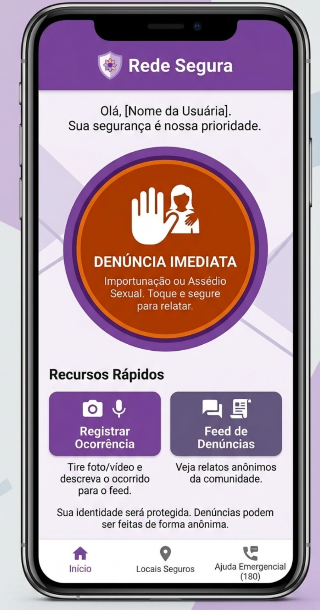

🚨
Denúncia Imediata
É o principal recurso da tela inicial. A proposta é permitir que a usuária acesse rapidamente uma opção para relatar uma situação de importunação ou assédio sexual.
Denúncia Imediata é uma proposta de aplicativo criada para ajudar mulheres que passam por situações de importunação ou assédio sexual em espaços públicos.
A ideia é facilitar o registro de ocorrências, ampliar o acesso à informação e criar uma rede de apoio, sempre priorizando segurança e acessibilidade.
Conheça as funções ↓
Cada recurso foi pensado para tornar o acesso à ajuda e ao registro de situações de assédio mais simples e rápido.
É o principal recurso da tela inicial. A proposta é permitir que a usuária acesse rapidamente uma opção para relatar uma situação de importunação ou assédio sexual.
Permite registrar informações sobre o ocorrido, como descrição e, quando for seguro e apropriado, foto ou vídeo. O objetivo é organizar o relato para facilitar seu encaminhamento.
Apresenta relatos da comunidade. A proposta é compartilhar informações de forma responsável e, no conceito do projeto, permitir denúncias anônimas para proteger a identidade das usuárias.
Área pensada para indicar locais onde a pessoa pode procurar apoio, como pontos de atendimento e espaços parceiros. Isso pode ajudar alguém a encontrar um lugar de apoio quando estiver em uma situação desconfortável.
Atalho para informações sobre o Ligue 180, canal oficial brasileiro de atendimento e orientação relacionado à violência contra a mulher. Em uma situação de emergência, também é importante procurar os serviços de emergência adequados.
Reúne os recursos principais em um único lugar, diminuindo a quantidade de etapas necessárias para encontrar uma função importante.
O projeto busca unir informação, acessibilidade e apoio em uma experiência simples.
A usuária encontra rapidamente a opção adequada para a situação.
Ela pode organizar os detalhes da ocorrência de maneira simples.
O aplicativo apresenta caminhos para informação e serviços de apoio.
Além da segurança, o projeto considera que diferentes pessoas precisam conseguir acessar as informações.
O Rede Segura mostra como a tecnologia pode ser utilizada para facilitar o acesso à informação e criar ferramentas de apoio. A proposta também incentiva uma cultura de respeito e conscientização sobre assédio e importunação sexual.